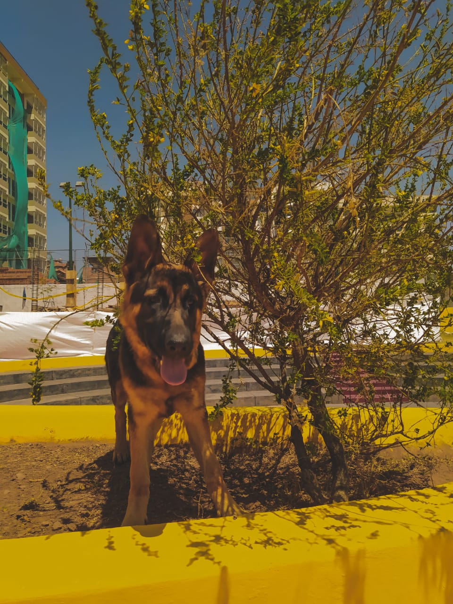
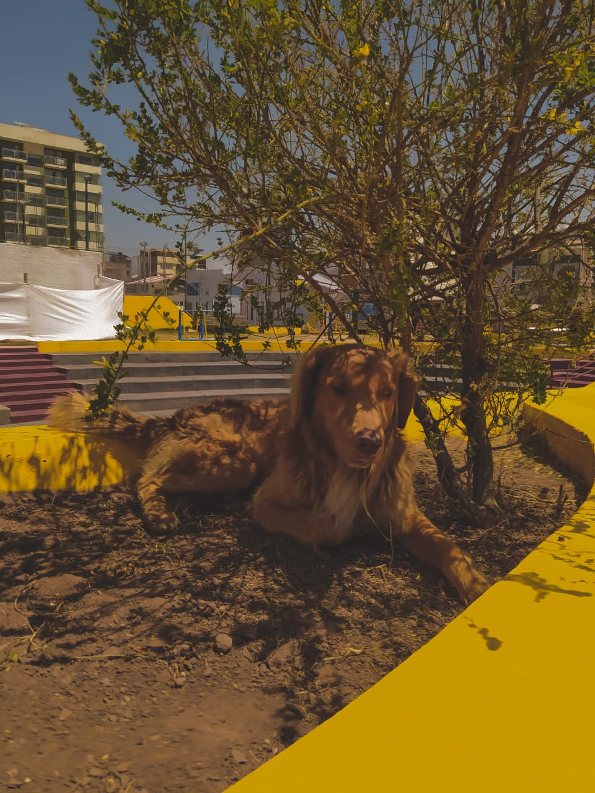

Informacion General
Mi nombre es Alvaro Ruben Quispe Huallpa y Soy estudiante de la carrera de Ingenieria de Sistemas en la Universidad Andina del Cusco.
Naci el 22 de Junio de 2001 en la Ciudad del Cusco,
Hobbies
Me gusta salir a correr por las mañanas, tambien me gusta tocar la guitarra.
-
-
Salir a Correr
Salir a correr por las mañanas se me hace muy relajante y desestrezante.
Tocar la Guitarra
Actualmente me encuentro aprediendo a tocar guitarra y es una de las cosas que mas me gustan.
Previous Next
Mis Mascotas
Soy amante de los animales por eso tengo dos perros.
-
-

Axel
Tiene 1 año y medio, es muy jugueton y travieso.

Shadow
Tiene 8 años, es muy obediente y tranquilo.
Previous Next
Lugar de donde vivo
Vivo en la Ciudad del Cusco en el distrito de San Jeronimo.